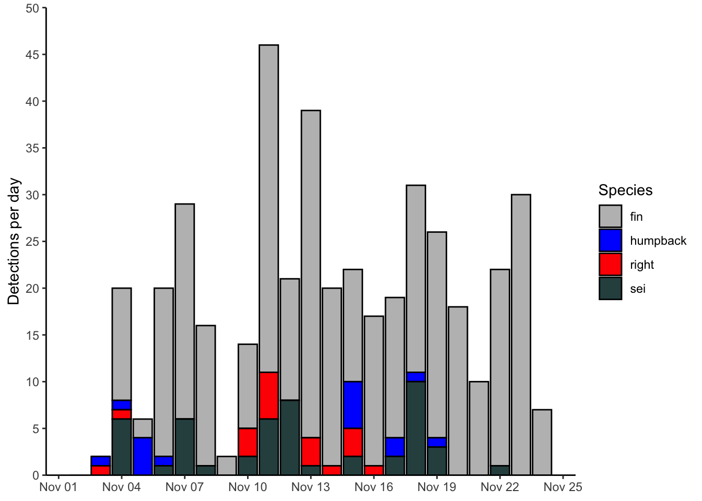
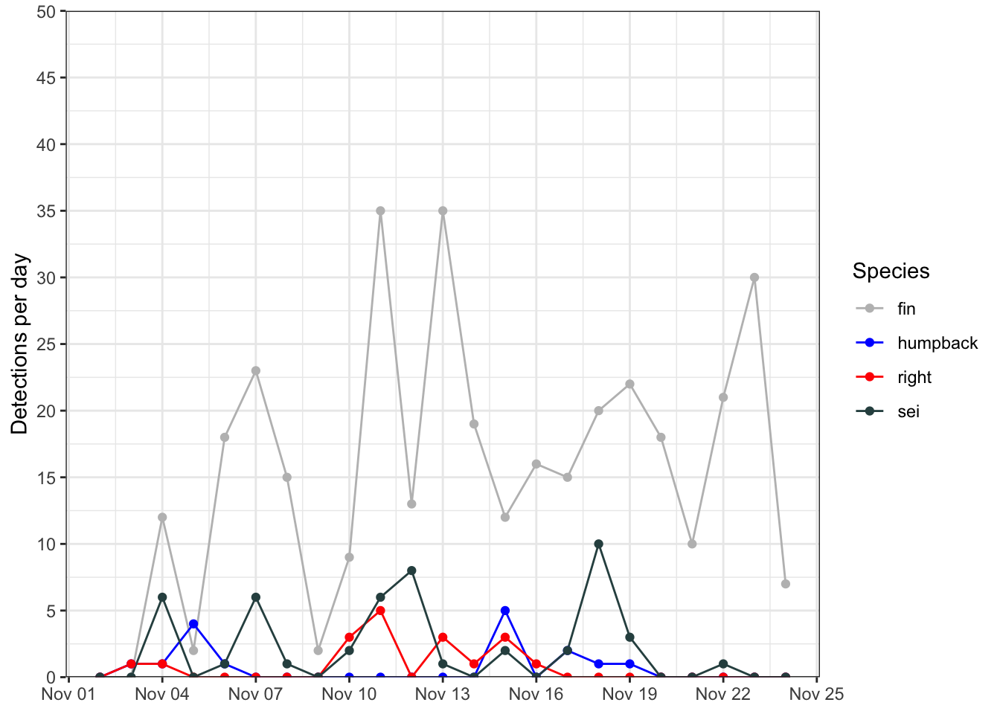
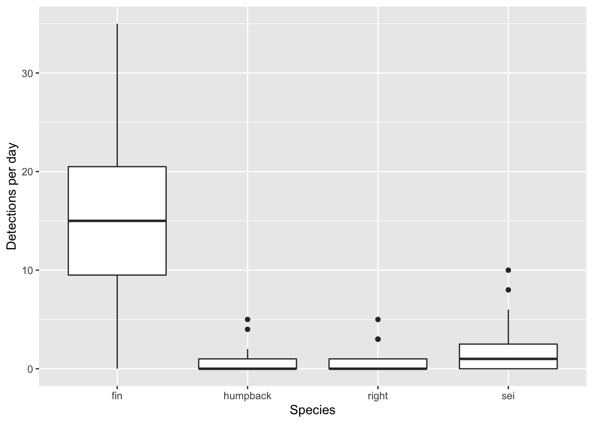
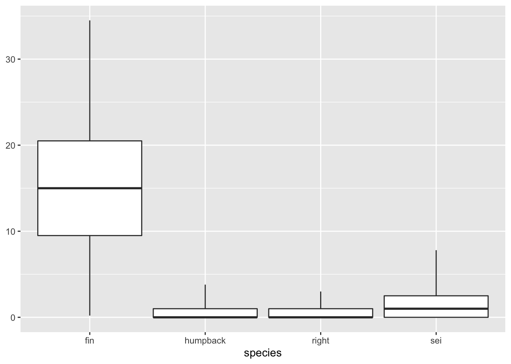
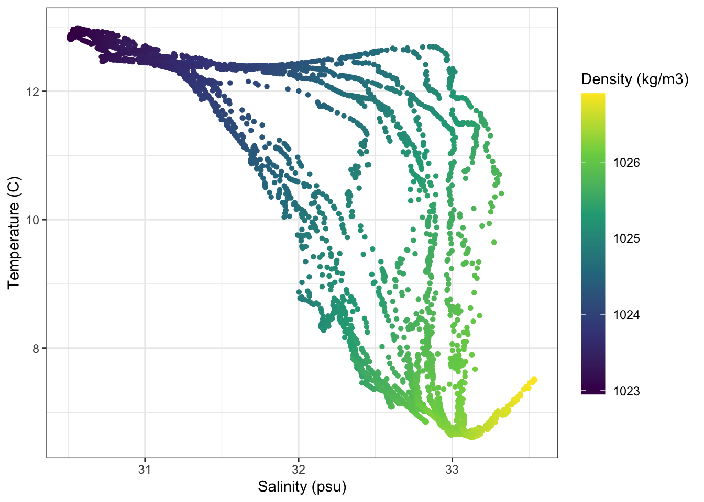
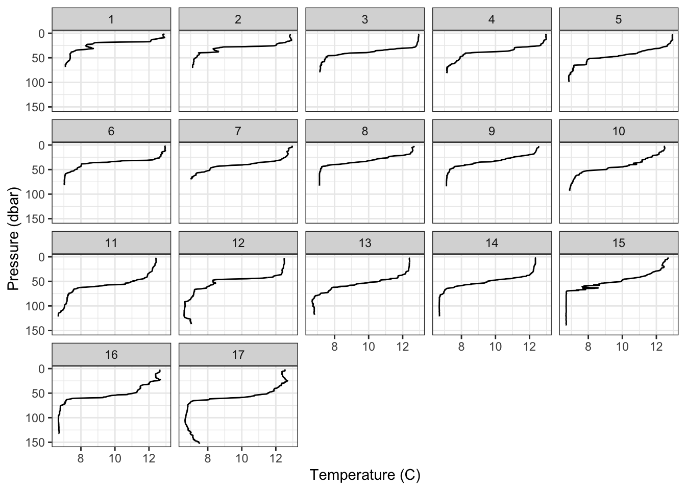
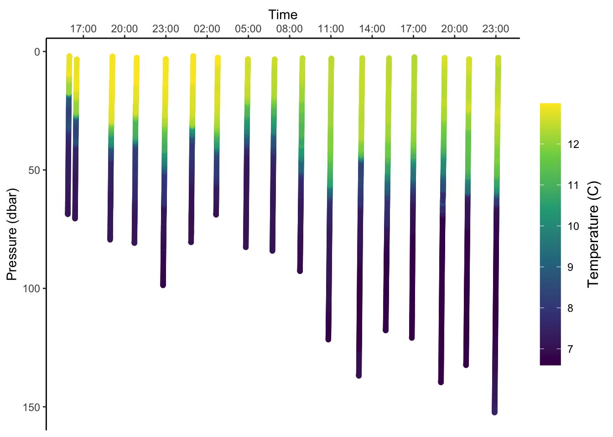
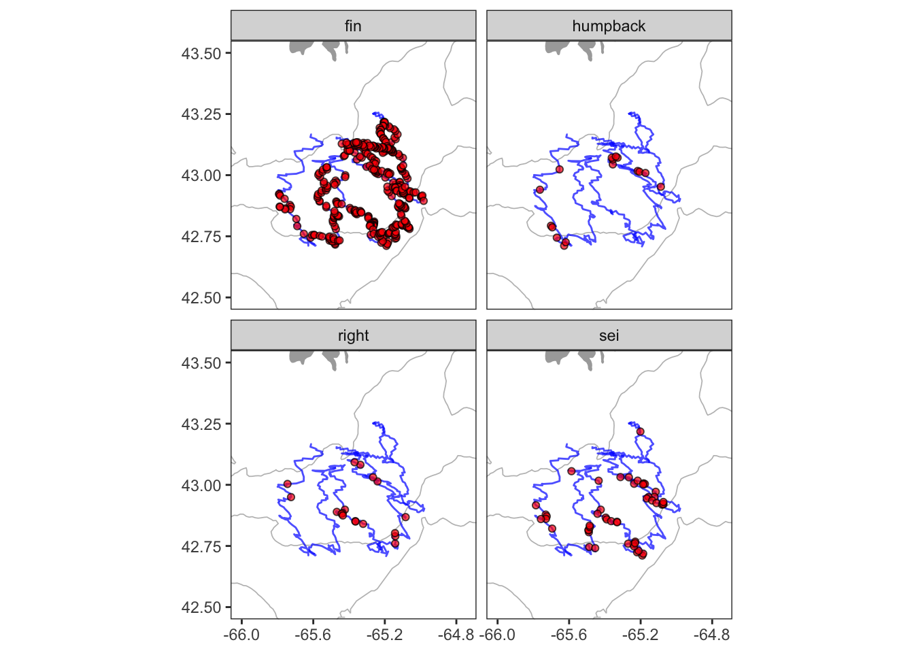

Chapter 4 Examples
Using ggplot2 is very different from most other plotting packages, and can be a lot to take in at first. I think the best way to wrap your head around it is to see it applied in a variety of ways, and of course try to do it yourself. Let’s work through a few more common types of plots.
4.1 Bar plot
Here’s the bar plot produced during the previous example.
ggplot()+
geom_col(data = df, mapping = aes(x=date,y=n,fill=species), color = 'black')+
scale_fill_manual(values = c('fin' = 'grey',
'humpback' = 'blue',
'right' = 'red',
'sei' = 'darkslategrey'))+
scale_y_continuous(limits = c(0,50), breaks = seq(0,50,5), expand = c(0,0))+
scale_x_date(date_breaks = '3 day', date_labels = '%b %d')+
labs(x = NULL, y = 'Detections per day', fill = 'Species')+
theme_classic()
4.2 Line plot
Here’s an example of using a line plot to display the same data as plotted above. Note the many similarities to the previous plot. The main differences here are in the geometries used, and the coloring aesthetics.
ggplot(data = df, mapping = aes(x=date, y=n, color=species, group=species))+
geom_path()+
geom_point()+
scale_color_manual(values = c('fin' = 'grey',
'humpback' = 'blue',
'right' = 'red',
'sei' = 'darkslategrey'))+
scale_y_continuous(limits = c(0,50), breaks = seq(0,50,5), expand = c(0,0))+
scale_x_date(date_breaks = '3 day', date_labels = '%b %d')+
labs(x = NULL, y = 'Detections per day', color = 'Species')+
theme_bw()
4.3 Box plot
Here’s a simple box plot, which relies on ggplot2 to compute some summary statistics ‘under the hood’. These are described in some detail in the geom_boxplot() documentation.
ggplot()+
geom_boxplot(data = df, aes(x = species, y = n))+
labs(x = 'Species', y = 'Detections per day')
If you do not want to rely upon ggplot to compute summary statistics, you can build them yourself prior to plotting. The key to that is using the stat='indentity argument in geom_boxplot(). Here’s an example of how one might to do that.
df %>%
group_by(species) %>%
summarize(
ymax = quantile(n,.95),
upper = quantile(n,.75),
middle = quantile(n, 0.5),
lower = quantile(n,.25),
ymin = quantile(n,.05)
) %>%
ggplot(aes(x = species,
ymin = ymin,
lower = lower,
middle = middle,
upper = upper,
ymax = ymax))+
geom_boxplot(stat = 'identity')
Note how I was able to pipe directly from the summary statistics into the ggplot without writing the data to an intermediate variable. That’s not necessary, but can be useful shorthand.
4.4 Scatter plot
For the next few plots we’ll be switching over to plotting data from ocean gliders. This is a simple temperature-salinity diagram, which is essentially a scatter plot for visualizing water mass physics. In this case I’ve decided to color the points by the density of the water.
This is similar to what we’ve seen before. I have used the scale_color_viridis_c() to switch from the default ggplot colormap to a nice, perceptually uniform viridis colormap. I also am making the colorbar taller with the argument guide = guide_colourbar(barheight = 15).
# read in ocean glider data
gld = readRDS(url('https://hansenjohnson.org/files/data/glider.rds'))
# plot
ggplot(data=gld, aes(y = temperature, x = salinity, color = density))+
geom_point(shape = 16)+
labs(y = 'Temperature (C)', x = 'Salinity (psu)', color = 'Density (kg/m3)')+
scale_color_viridis_c(guide = guide_colourbar(barheight = 15))+
theme_bw()
4.5 Profiles
4.5.1 Temperature profiles
Here I’m going to plot vertical glider profiles. The first new things here is the scale_y_reverse() function, which simply reverses the y axis direction. The other, incredibly powerful feature I’m showing here is the facet_wrap() function. This effectively creates separate subplots for each category of the facetting variable (in this case profile_id).
ggplot(gld, aes(x=temperature,y=pressure,group=profile_id))+
geom_path()+
scale_y_reverse()+
labs(x = 'Temperature (C)', y = 'Pressure (dbar)')+
facet_wrap(~profile_id)+
theme_bw()+
theme()
4.5.2 Timeseries
These profiles can also be viewed as a timeseries. The main new things here is that I’ve done some formatting to rotate and center the title of the colorbar.
ggplot(gld, aes(x=time,y=pressure,color=temperature))+
geom_point()+
scale_y_reverse()+
scale_x_datetime(position = 'top', date_breaks = '3 hours', date_labels = '%H:%M')+
scale_color_viridis_c(
guide = guide_colourbar(barheight = 15,
title.theme = element_text(angle=90),
title.position = 'right',
title.hjust = 0.5))+
labs(x = 'Time', y = 'Pressure (dbar)', color = 'Temperature (C)')+
theme_classic()+
theme()
4.6 Map
Mapping requires using several datasets and plotting geometries. It can be complicated, but it’s all still the same ggplot2 grammar. Here I’m using geom_polygon() to plot the coastline, geom_contour() to add a depth contour, geom_path() to draw the glider track and geom_point() to add the whale detections. The order here matters. Things added later will be plotted on top of things added earlier. The other important new concept here is the coord_quickmap(). The coord_*() functions allow you to access and alter the underlying coordinate system that ggplot is using to render your geometry. Using coord_quickmap() is a quick approximation of a spherical map projection. I’d recommend switching over to coord_map() in situations where you want a more accurate projection, and are prepared to wait for it.
# positions of whale detection
det = readRDS(url('https://hansenjohnson.org/files/data/detections_all.rds'))
# trackline of detection platform
trk = readRDS(url('https://hansenjohnson.org/files/data/detections_track.rds'))
# coastline data
bg = readRDS(url('https://hansenjohnson.org/files/data/coastline.rds'))
# bathymetry data
bf = readRDS(url('https://hansenjohnson.org/files/data/gg_bathy.rds'))
# make plot
ggplot()+
# add 100m contour
geom_contour(data = bf,
aes(x=x, y=y, z=z),
breaks=c(-100),
size=c(0.3),
colour="grey")+
# add coastline
geom_polygon(data = bg, aes(x = lon, y = lat, group = group),
fill = "darkgrey", color = NA) +
# add tracks and detections
geom_path(data = trk, aes(x=lon,y=lat), alpha = 0.7, color = 'blue')+
geom_point(data = det, aes(x=lon,y=lat), shape = 21, alpha = 0.7, fill = 'red')+
# configure projection and plot domain
coord_quickmap(xlim = c(-66, -64.75), ylim = c(42.5, 43.5))+
# facet by species
facet_wrap(~species)+
# formatting
labs(x = NULL, y = NULL)+
theme_bw()+
theme(panel.grid = element_blank())